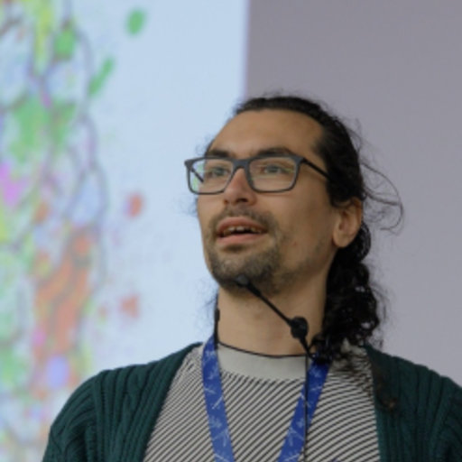

Members# Staff# Pierre Bellec Associate professor - scientific director Julie Boyle Project manager Basile Pinsard Data engineer Marie St-Laurent Data scientist - digital brain phantom trainer Post-doctoral fellows# Hao-Ting Wang Post-doctoral fellow - foundation models for fMRI Isil Bilgin Post-doctoral fellow - brain-aligned large language models - co-supervision with Dr Leila Wehbe  Yann Harel Post-doctoral fellow - brain/behaviour correlates of flow in videogames - co-supervision with Dr Karim Jerbi PhD students# Maëlle Fréteault Phd student - personalized auditory brain encoding models - co-supervision with Dr Nicolas Farrugia Maximilien LeClei PhD student - neuroevolution for human alignment in videogames Marie-Ève Picard PhD student - physiological correlates of brain/behaviour in videogames - co-supervision with Dr Pierre Rainville Pravish Sainath Phd student - brain alignment in memory models - co-supervision with Dr Guillaume Lajoie FranÇois Paugam Phd student - brain/behaviour imitation in videogames - co-supervision with Dr Guillaume Lajoie Xanthy Lajoie Phd student - sex effects on language functional connectivity - co-supervision with Dr Simona Brambati Interns# Hugo Delhaye Bachelor’s student in psychology - measuring curiosity in videogames - co-supervision with Dr Yann Harel Mikkel Schöttner Phd student - Mitacs internship spring 2024